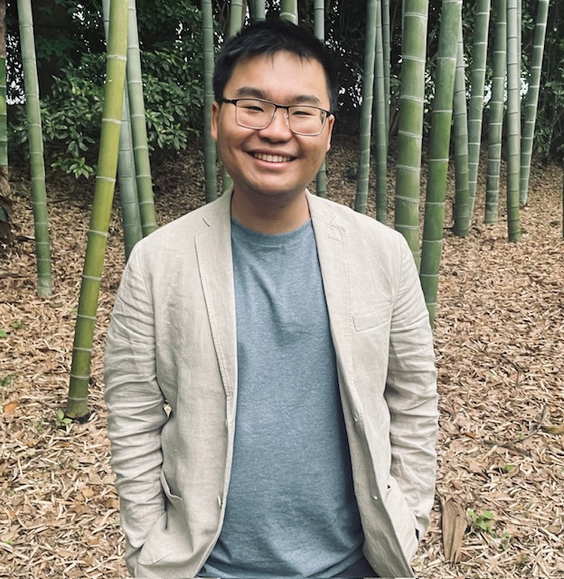

Dang Pham (Phạm Cao Đăng)
McCray Postdoctoral FellowUniversity of Colorado Boulder
About me
Hi! I'm currently a postdoctoral research fellow at the University of Colorado Boulder. My research focus is in the post-main sequence evolution of planetary systems, specifically in understanding the origins of metal pollution in white dwarfs. I am also broadly interested in planetary dynamics, habitability, and other topics in astrophysics.
Short CV
Postdoctoral Fellow
- University of Colorado Boulder, 2025 - Present
- University of Toronto, 2020 - 2025
- Advisor: Hanno Rein
- Thesis: Small Bodies, Small Stars: The Fate of Comets
- Cornell University, 2016 - 2020
- Research Advisors: Lisa Kaltenegger and David Chernoff
- 12 total, 8 as first to third author (see list)
Select Awards and Honors
- McCray Postdoctoral Fellowship, 2025 -
- Ontario Graduate Scholarship, 2024–2025
- University of St. Michael’s College Junior Fellowship, 2023–2025
- Max-Planck-Institut für Astronomie Summer Research Fellowship, 2019
- Overview on exoplanet research for high school teachers through Teaching the Universe, 2025
- Solar eclipse workshops for the Toronto Public Library, 2024
- Juror for the Canadian Young Physicists’ Tournament, 2022-2024
- Volunteer for and Co-Director of AstroTours, 2021-2023
- Volunteer for and President of the Cornell Society of Physics Students, 2016-2020
- Volunteer for the Cornell Astronomical Society, 2016-2020
 ORCID
ORCID